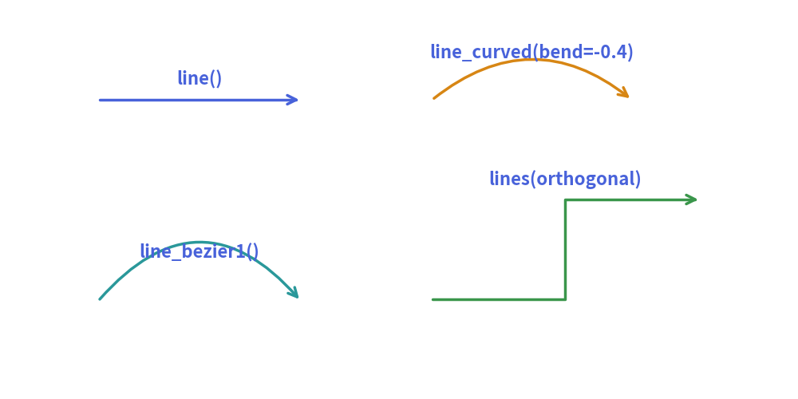
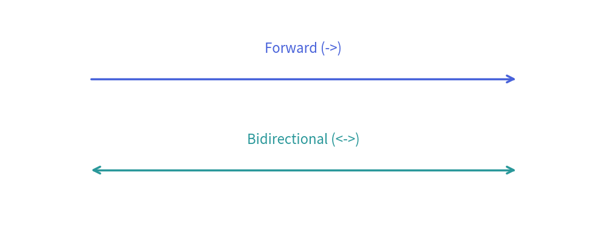
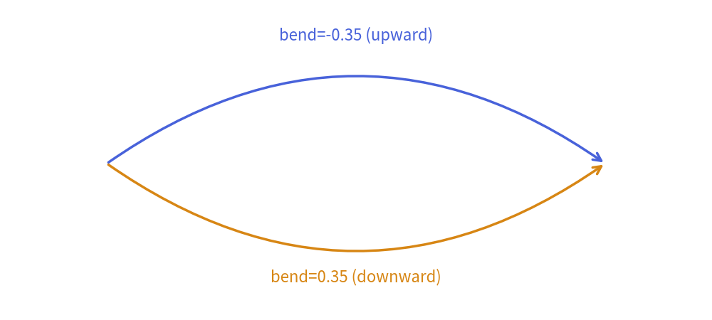
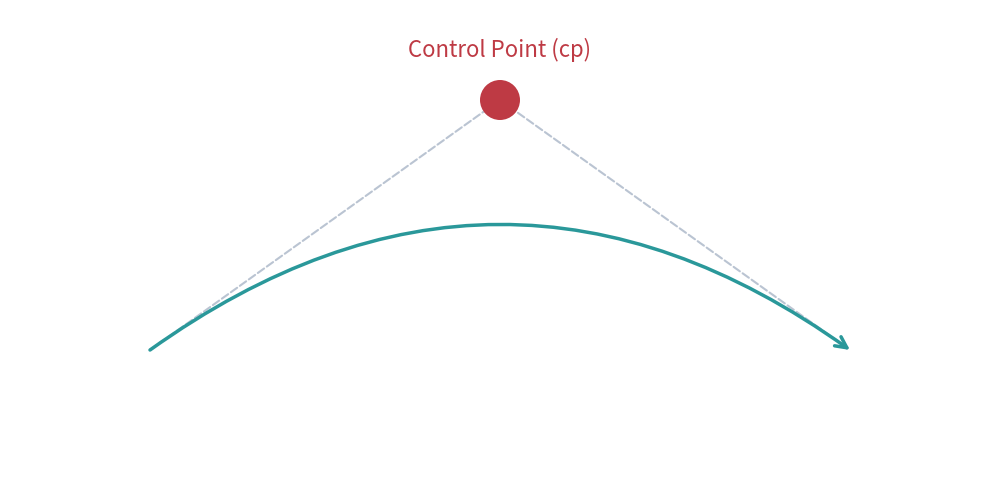
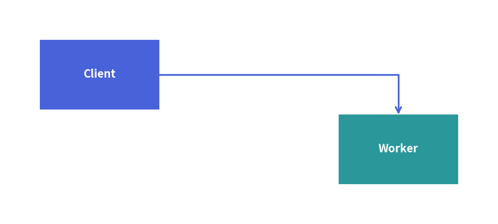
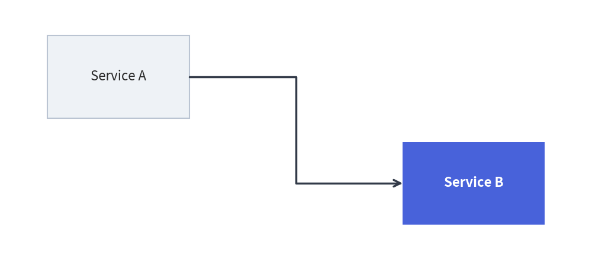

Lines & Connectors
Connectors establish communication pathways, data flow directions, and structural relationships between diagram entities.
The drawlib.lines module provides straight lines, smooth circular arcs, Bézier curves, and multi-point orthogonal Manhattan routings.
1. Overview of Line Primitives

2. Terminal Arrowhead Markers
All line functions accept the arrowhead keyword argument:
| Value | Appearance | Description |
|---|---|---|
"" or "-" |
──────── |
Plain line without terminal markers. |
"->" |
───────► |
Forward directed arrowhead at the destination point (xy2). |
"<-" |
◄─────── |
Reverse directed arrowhead at the source point (xy1). |
"<->" |
◄──────► |
Bidirectional arrowheads at both ends. |
3. Function Reference
3.1. Straight Line (line)
Connects two coordinates xy1 and xy2 with a direct straight segment.
from drawlib.canvas import save, setup
from drawlib.lines import line
from drawlib.styles import Styles
from drawlib.text import text
setup(width=100, height=40)
line((15, 27), (85, 27), arrow_head="->", style=Styles.PrimaryBold)
text((50, 32), "Forward (->)", style=Styles.Primary)
line((15, 12), (85, 12), arrow_head="<->", style=Styles.SecondaryBold)
text((50, 17), "Bidirectional (<->)", style=Styles.Secondary)
save()

3.2. Smooth Arc Curve (line_curved)
Draws a single circular arc between xy1 and xy2.
bend: Controls the degree of curvature ($0.0$ = flat line, negative = bend upward, positive = bend downward). Defaults to0.2.
from drawlib.canvas import save, setup
from drawlib.lines import line_curved
from drawlib.styles import Styles
from drawlib.text import text
setup(width=100, height=45)
# Negative bend curves upward in Cartesian space
line_curved((15, 22), (85, 22), bend=-0.35, arrow_head="->", style=Styles.PrimaryBold)
text((50, 40), "bend=-0.35 (upward)", style=Styles.Primary)
# Positive bend curves downward in Cartesian space
line_curved((15, 22), (85, 22), bend=0.35, arrow_head="->", style=Styles.AccentBold)
text((50, 6), "bend=0.35 (downward)", style=Styles.Accent)
save()

3.3. Quadratic Bézier Curve (line_bezier1)
Connects xy1 to xy2 controlled by a single control point cp that pulls the curve tangentially:
from drawlib.canvas import save, setup
from drawlib.lines import line, line_bezier1
from drawlib.shapes import circle
from drawlib.styles import Styles
from drawlib.text import text
setup(width=100, height=50)
p1, p2 = (15, 15), (85, 15)
cp = (50, 40)
# Control point tangent guides
line(p1, cp, style=Styles.MutedDashed)
line(cp, p2, style=Styles.MutedDashed)
circle(cp, radius=2, style=Styles.DangerFlat)
text((50, 45), "Control Point (cp)", style=Styles.Danger)
# Quadratic Bézier curve
line_bezier1(p1, p2, cp=cp, arrow_head="->", style=Styles.SecondaryBold)
save()

3.4. Cubic Bézier Curve (line_bezier2)
Connects xy1 to xy2 with two independent control points cp1 and cp2, enabling S-curves and asymmetric waves:
from drawlib.canvas import save, setup
from drawlib.lines import line, line_bezier2
from drawlib.shapes import circle
from drawlib.styles import Styles
from drawlib.text import text
setup(width=100, height=50)
p1, p2 = (15, 25), (85, 25)
cp1, cp2 = (35, 42), (65, 8)
# Tangent guides for both control points
line(p1, cp1, style=Styles.MutedDashed)
line(p2, cp2, style=Styles.MutedDashed)
circle(cp1, radius=2, style=Styles.DangerFlat)
text((35, 46), "cp1", style=Styles.Danger)
circle(cp2, radius=2, style=Styles.DangerFlat)
text((65, 4), "cp2", style=Styles.Danger)
# Cubic Bézier S-curve
line_bezier2(p1, p2, cp1=cp1, cp2=cp2, arrow_head="->", style=Styles.PrimaryBold)
save()

4. Multi-Point & Orthogonal Routing (lines)
The lines function connects a sequence of two or more coordinates [(x0, y0), (x1, y1), ...].
In software architectures and circuit schematics, orthogonal (Manhattan) routing is standard for clean, non-overlapping bus lines:
4.1. L-Routing (Single 90° Turn)
Connects two entities horizontally first, then vertically:
from drawlib.canvas import save, setup
from drawlib.lines import lines
from drawlib.shapes import rectangle
from drawlib.styles import Styles
setup(width=100, height=45)
rectangle((20, 30), width=24, height=14, style=Styles.PrimaryFlat, text="Client", text_style=Styles.WhiteBold)
rectangle((80, 15), width=24, height=14, style=Styles.SecondaryFlat, text="Worker", text_style=Styles.WhiteBold)
# L-shaped connection: horizontal from Client, then downward to Worker
lines([(32, 30), (80, 30), (80, 22)], arrow_head="->", style=Styles.PrimaryBold)
save()

4.2. Z-Routing / Dogleg (Two 90° Turns)
Connects two offset components across a shared mid-channel $x_{\text{mid}}$:
from drawlib.canvas import save, setup
from drawlib.lines import lines
from drawlib.shapes import rectangle
from drawlib.styles import Styles
setup(width=100, height=45)
rectangle((20, 32), width=24, height=14, style=Styles.PrimaryFlat, text="Service A", text_style=Styles.WhiteBold)
rectangle((80, 14), width=24, height=14, style=Styles.AccentFlat, text="Service B", text_style=Styles.WhiteBold)
# Z-shaped dogleg connection across midpoint x_mid = 50
x_mid = 50
lines([(32, 32), (x_mid, 32), (x_mid, 14), (68, 14)], arrow_head="->", style=Styles.PrimaryBold)
save()

[!NOTE] For automated orthogonal routing with automatic bounding-box clipping and label alignment, consider using high-level Architecture Diagrams or Flow Diagrams.